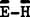

|
--Force and Hertzian Waves Cannot Exist
in Vacuum --
Note that
one cannot have an observable "force vector" existing' in
vacuum a priori.
For example, we have the
definition of force as
or
and we see that, rigorously, a force vector CONSISTS OF (not, "is
equal to") a time-changing mass-motion vector system. IF
THERE IS NO OBSERVABLE ACCELERATING MASS PRESENT, THEN THERE CAN BE
NO OBSERVABLE FORCE PRESENT. The mass can accelerate in time
(increase or decrease of mass) or space (increase or decrease of
velocity) or both.
Observable
force CANNOT exist in vacuum (in the absence of mass), a priori.20
However,
assume for a moment that one could have a massless force vector, as
assumed in present electrical theory. Let this force vector appear
at a point in the vacuum. Since the vacuum has zero observable
mass, it would have zero inertial resistance to this hypothetical observable force
-- hence the observable force would instantly produce an
"infinite" acceleration of its point of application,
vanishing with it into the infinite distance. Therefore our fictitious
force would disappear the instant it appeared! In any case,
it could not be retained at a point in the vacuum for any finite length of time, however small.
The direct
implications are that (1) something other than an observable
electrical force field exists in the vacuum, and (2) there must exist a
more fundamental mechanism by which this "something else" generates or CREATES a force on/of a
moving electrically charged mass.
(Note again that, at the most basic level, any particle of mass is always
quivering, in motion, and accelerating. from quantal
considerations alone.)
Thus
immediately we have discovered something unique about so-called
"force-fields" in vacuum: for example, about gravitational
field, electrical field, and magnetic field (and the strong force and
the weak force as well). These fields do not exist at all as ordinary
force vectors --
and real force fields -- in vacuum!
and fields, e.g.,
are defined in terms of force per unit electrical charged mass and magnetically charged
mass, respectively. In the absence of mass, they cannot exist.
And this in
turn means that transverse  field waves (Hertzian waves) cannot exist
in a vacuum. Indeed, they appear on, and ARE CONSTITUTED of, the
charged-mass-motion that changes, and they appear where such change
occurs, as a result of an introduced mass.21 But in the absence
of the spinning charged particle of mass, they do not exist as force
fields at all.
Hertzian
waves exist in a transmitting whip antenna, for example, in the
oscillating electron gas along its length. Something else entirely
different exists in vacuum between the transmitting antenna and the receiving antenna. Then in the receiving antenna, Hertzian waves
again exist in the oscillating electron gas along its length. (See
Figure 3. )
|